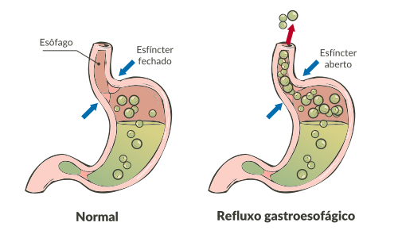

O refluxo gastroesofágico é o retorno do conteúdo gástrico ou duodenal até o esôfago, resultando em sintoma característico de azia. Todas as pessoas podem experimentar, ao longo da vida, este sintoma, sobretudo após refeições volumosas ou muito gordurosas.
Quando o refluxo se torna recorrente, crônico, causando sintomas frequentes e até mesmo lesões no esôfago, dá-se o nome de doença do refluxo gastroesofágico (DRGE).
